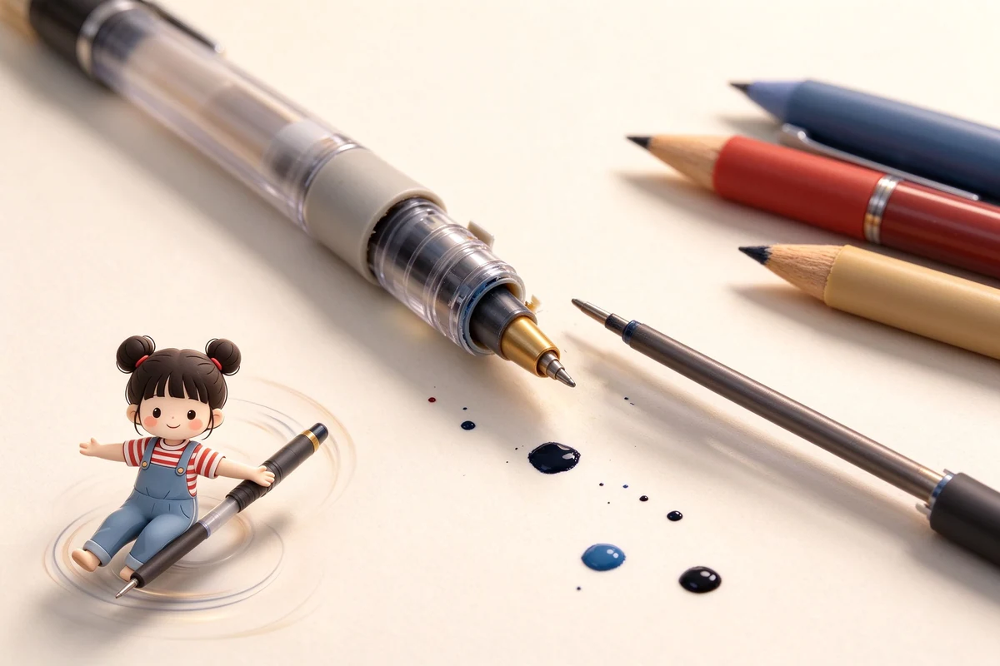
原子筆為何會漏油？原子筆選購、油性墨水與長壽命關鍵
原子筆用的是油性墨水，靠前端小筆珠在紙上滾動把油帶出來：好處是乾得快、不怕壓、放三年還能寫；缺點就是你最討厭的——會在口袋滲出一灘油。

原子筆用的是油性墨水，靠前端小筆珠在紙上滾動把油帶出來：好處是乾得快、不怕壓、放三年還能寫；缺點就是你最討厭的——會在口袋滲出一灘油。
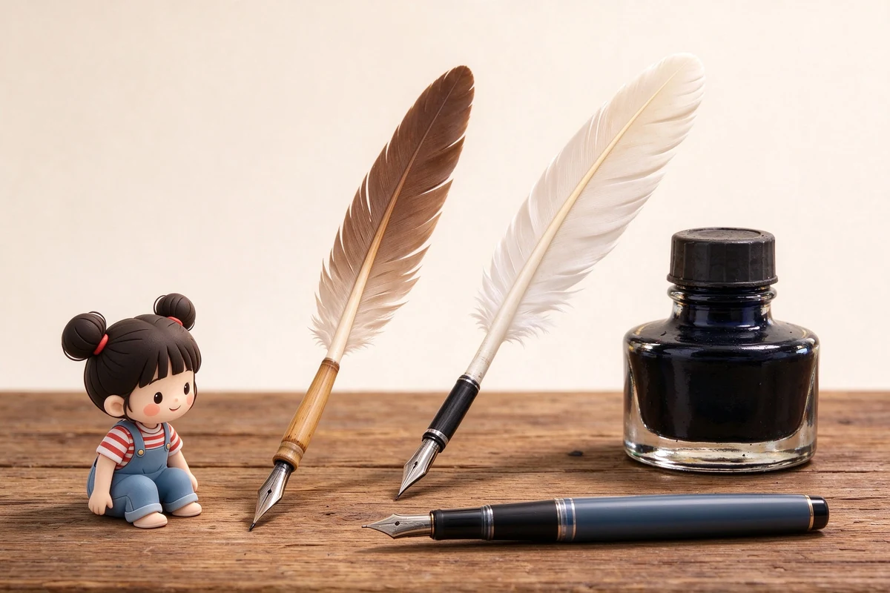
原子筆之所以能打敗鋼筆普及全世界，起點是個很現實的需求：鋼筆在高空會漏墨，而這個轉得動的小筆珠在什麼氣壓下都能寫。
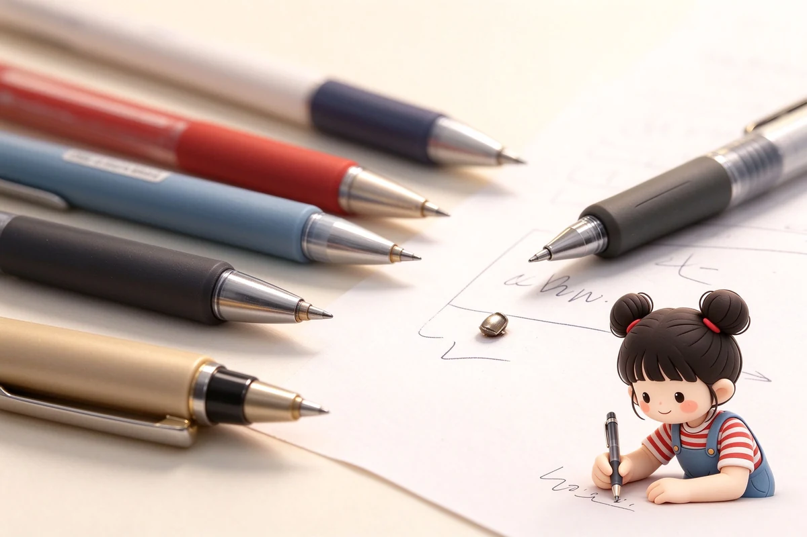
這四支是台灣書局最常見的國民中性筆：SARASA 平價多彩、Juice Up 細尖飽和、ENERGEL 主打速乾、uni-ball one 低重心好寫，單支幾乎都在 65 元以內。
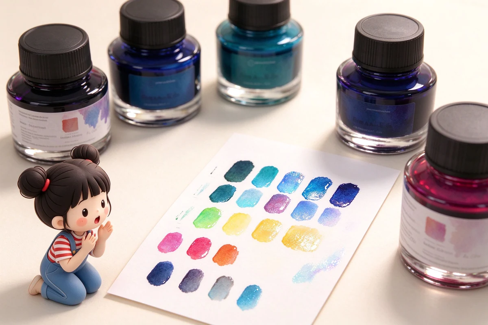
藍黑墨是公文經典：鞣酸鐵配方寫下去偏藍，接觸空氣氧化逐漸變黑、還越放越防水；缺點是偏酸，久放對鋼尖略帶腐蝕。
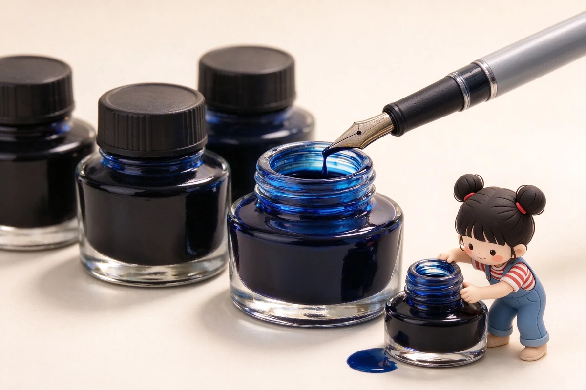
算給你看：卡式墨每毫升大約是瓶裝墨的五到六倍價錢，但它贏在乾淨、好帶、不弄髒；用量少或常外出，卡水划算，天天寫就上吸墨器。

子彈筆記的本體是一套符號速記法，不是華麗的畫面：任務寫一個點、事件畫個圈、想法用破折號，三個符號就能把一天記完。
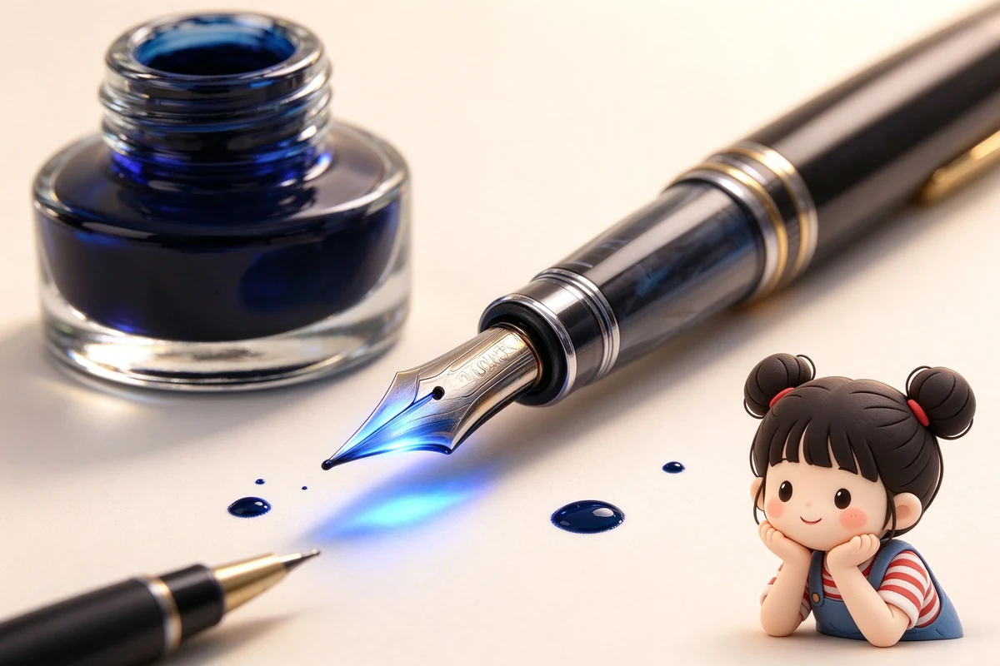
鋼筆的筆尖、上墨、保養與品牌，從第一支鋼筆到進階玩家，一次講透。
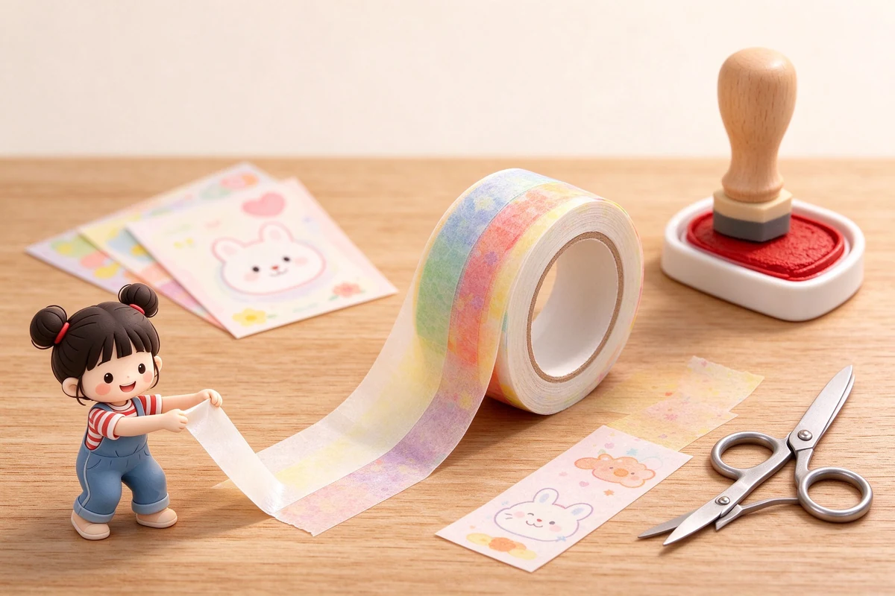
紙膠帶、印章印泥、貼紙、信紙明信片與桌面文創小物，加上文具演進、冷知識與品牌故事，文具控的療癒收藏與送禮清單一次講透。
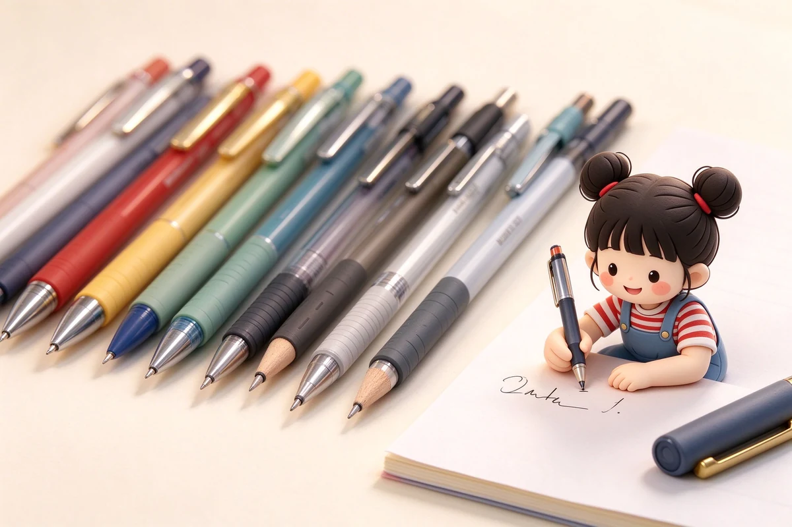
中性筆、原子筆、自動鉛筆、木桿鉛筆與麥克筆，每天握在手上的筆怎麼選。
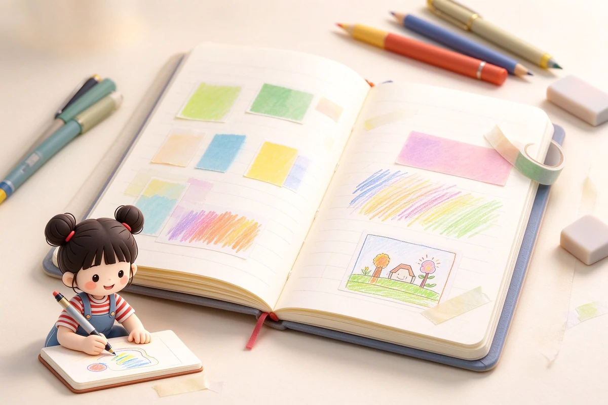
筆記本、手帳、活頁、紙張克重與裝訂，找到最對自己脾氣的那一本。
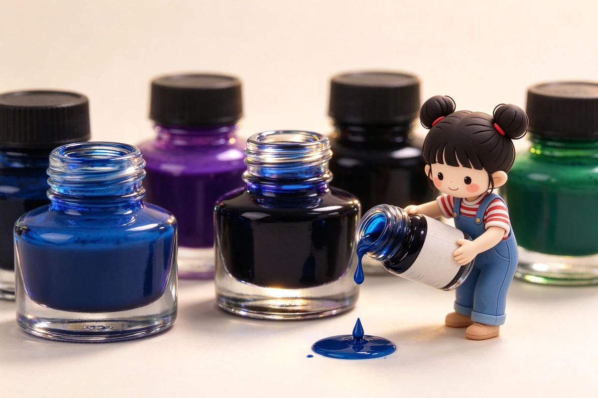
染料與顏料、防水、sheen、shading、調墨與保存，墨水是鋼筆玩家的色彩宇宙。
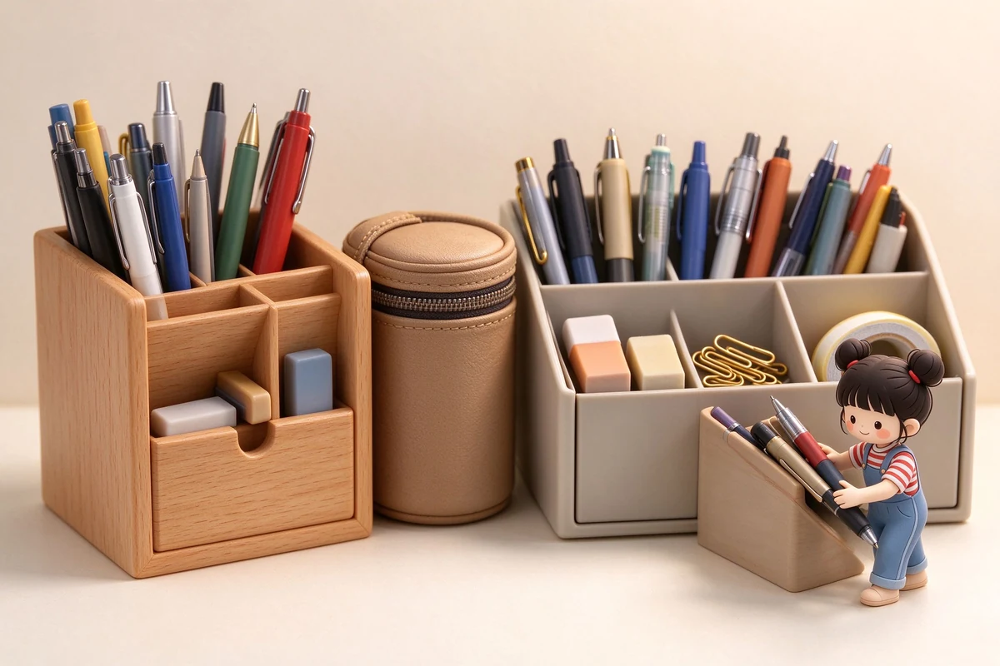
筆盒筆袋、桌面收納、旅行文具組，以及尺、剪刀、膠帶等每天用到的周邊。
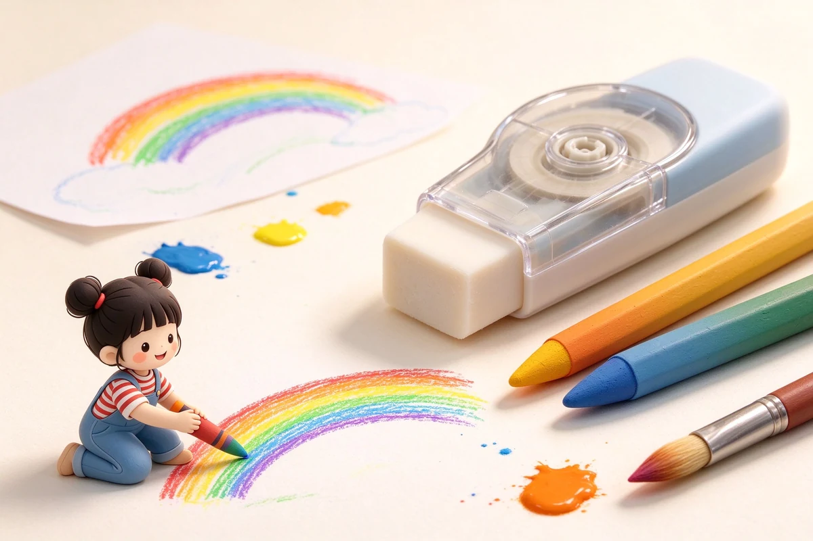
橡皮擦、修正帶、色鉛筆、水彩，以及兒童文具的安全與握姿。
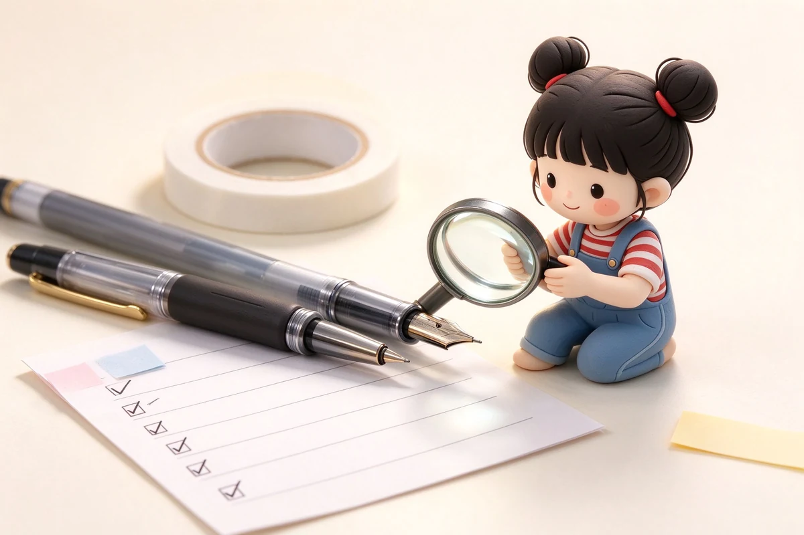
依身分、預算、送禮情境與完整比較表，把錢花在刀口上。